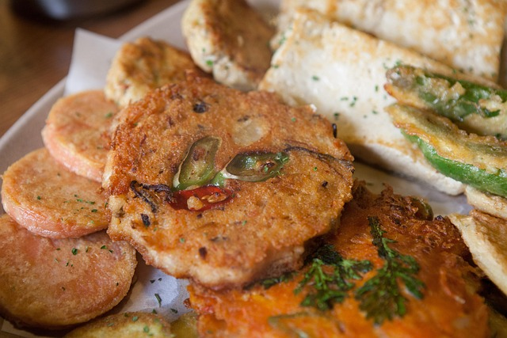

Korean Pancake

Korean pancakes, or jeon, are savory, pan-fried fritters made from a variety of ingredients coated in a light flour and egg batter.
ingredients
- Ingredients for vegetable pancakes
- 4 green onions, cut into 1 inch long
- 1/3 cup leek (optional), sliced thinly 1 inch long
- 3 ounces zucchini matchsticks (about 1/2 cup)
- 1 green chili pepper (or jalapeno), optional, sliced
- 3 ounces onion, sliced
- 1/3 cup sweet potato
- 1 fresh mushroom (white, baby portobello, or shiitake)
- 3/4 cup all purpose flour
- 1/2 teaspoon kosher salt
- 3/4 cup water
- vegetable oil
- For dipping sauce
- vegetable oil
- 2 teaspoons white vinegar
- 1 teaspoon Korean hot pepper flakes (gochugaru), optional
- 1 teaspoon toasted sesame seeds